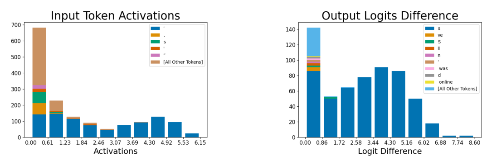

Token histograms for the apostrophe feature (feature 556)

How to read these histograms
Both panels are stacked bar histograms built from many individual (token, context) instances, binned along the x-axis and colored by which specific token each instance is; a handful of the most frequent tokens get their own color, and everything else is grouped into "[All Other Tokens]". The left panel, "Input Token Activations," only includes instances where dictionary feature 556 activates at all, binned by how strongly it activates; bar height is a count of instances, not a probability. The right panel, "Output Logits Difference," only includes tokens whose predicted logit dropped when feature 556 is ablated from the residual stream via Less-than-rank-one ablation, binned by the size of that drop; the paper plots only effects above a threshold for legibility, even though roughly 12,000 logits were affected in total, so the true tail of small effects is larger than what is drawn (sparse-autoencoders, §"5.1 INPUT: DICTIONARY FEATURES ARE HIGHLY MONOSEMANTIC", p. 7). A naive read of total bar height as "everything the feature does" would understate the input panel's coverage of low-activation cases and overstate how exhaustive the output panel is.
What the histograms show
In the input panel, the lowest activation bin contains many tokens other than the apostrophe ("[All Other Tokens]", plus some "s" and other punctuation) alongside apostrophes, but from the second bin upward the bars become almost entirely apostrophe-colored, so the feature's strongest, most confident firings are overwhelmingly on the apostrophe token itself, while its weak firings pick up conceptually related but distinct tokens. In the output panel, the tallest bar (smallest logit changes) is dominated by "[All Other Tokens]" — many tokens are suppressed slightly — but from the second bin outward the "s" token dominates almost every bar, meaning that among tokens whose prediction drops substantially when feature 556 is removed, "s" is suppressed far more than any other single token. This matches the feature being used by the model to predict the "s" that follows an apostrophe in contractions and possessives like "let's" (sparse-autoencoders, §"5.2 OUTPUT: DICTIONARY FEATURES HAVE INTUITIVE EFFECTS ON THE LOGITS", p. 7).
Why this is the paper's monosemanticity case study
The Apostrophe dictionary feature (feature 556) is used as the central worked example of Monosemanticity: it activates on essentially one input token and, when removed, has one predictable, semantically coherent effect on the output, in contrast to the Polysemanticity and Superposition the paper is built around. The corresponding Default (neuron/residual-stream) basis baseline dimension for the residual stream activates on a wider and less coherent mix of tokens at similar magnitudes, underscoring that this clean behavior is a property of the learned Dictionary feature rather than of the direction simply being an apostrophe detector.